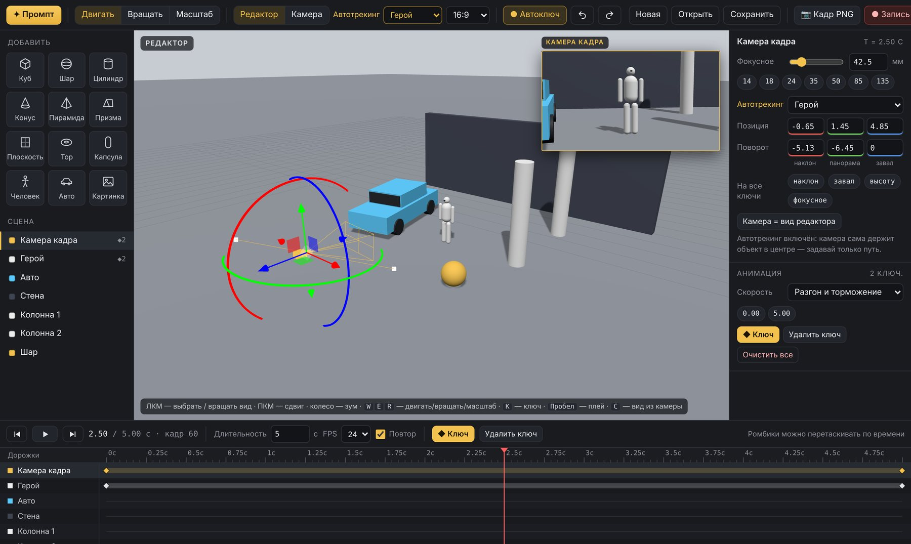
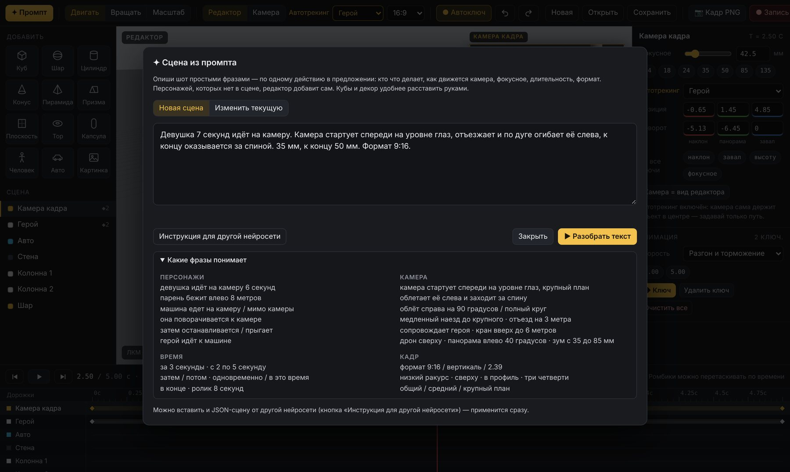
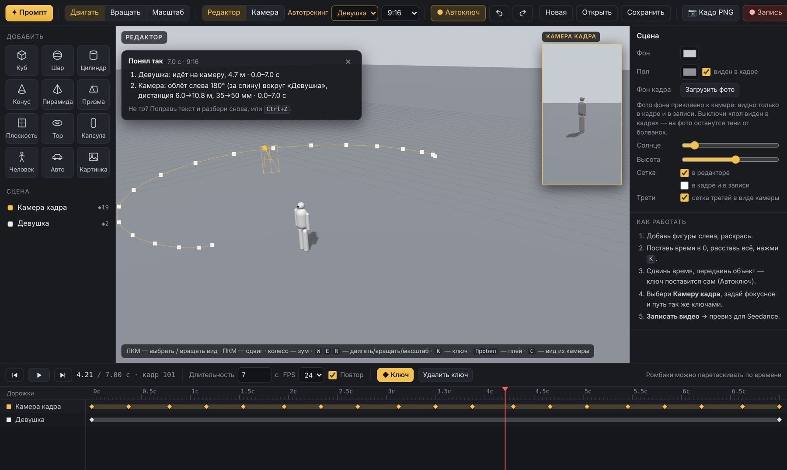
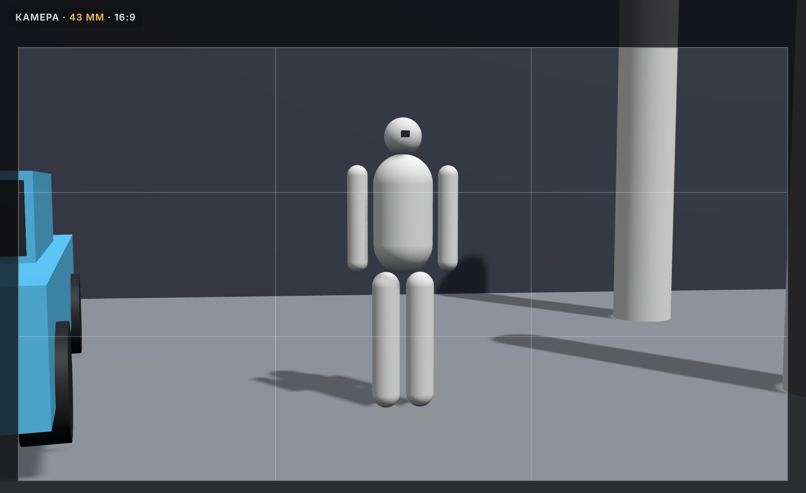

Превиз за 10 минут: редактор болванок для Seedance
Ставите простые фигуры, задаёте движение персонажа и камеры — мышкой или обычным текстом — и получаете видео-превиз. Его отдаёте в Seedance вместе с картинками локации, персонажа и машины, и нейросеть повторяет вашу камеру и движение. 3D уметь не нужно.
01Что где на экране
Редактор работает в браузере на компьютере. Ничего ставить не нужно, сцена сохраняется сама.

1 2 3 4 5 6 7 8 9 10 11 1202Быстрый старт
- Соберите сцену. Слева нажмите «Человек», «Авто», «Куб». Тяните цветные стрелки, чтобы двигать, и кольца, чтобы поворачивать. Числа в правой панели можно тянуть мышкой влево-вправо.
- Задайте начало движения. Поставьте время на 0 (клавиша Home) и нажмите K — объект запомнит позицию.
- Задайте конец. Кликните по таймлайну на нужной секунде и переставьте объект. При включённом «Автоключе» ключ поставится сам — объект поедет из точки А в точку Б.
- Настройте камеру. Выберите «Камера кадра» в списке, включите автотрекинг на героя, задайте фокусное и так же ключами — путь камеры.
- Проверьте и запишите. Пробел — воспроизведение, C — посмотреть из камеры. Затем «● Запись» → «Скачать» — у вас MP4 превиза.
03Сцена из текста — без мышки
Нажмите «✦ Промпт», опишите шот простыми фразами — по одному действию в предложении — и нажмите «▶ Разобрать текст». Персонажей, которых нет в сцене, редактор добавит сам. После разбора появится карточка «Понял так»: что он сделал и что не распознал.

Персонажи
Камера
Время
Кадр

04Камера как у оператора
| Автотрекинг | Список вверху. Камера сама держит объект в центре — вы задаёте только путь. Повернёте камеру кольцом — трекинг выключится сам. |
| Кольца поворота | Зелёное — панорама, красное — наклон, синее — завал горизонта. |
| Фокусное | 14–24 мм — широкий, 35 — как глаз, 50 — портрет, 85–135 — сжатие и деталь. Меняется между ключами — получается зум. |
| «На все ключи» | Выставили наклон или фокусное на одном ключе — одной кнопкой переносите во все ключи камеры. |
| Вид из камеры | C, затем стрелки ↑↓←→ — ехать, PgUp/PgDn — выше/ниже, колесо — наезд. |
| Скорость | «Разгон и торможение» — мягкий старт и стоп. «Ровно, плавные стыки» — без замедлений. «Линейно» — механически ровно. |

05Из превиза — в нейросети
Nano Banana: стартовый кадр
Поставьте время на нужный момент и нажмите «📷 Кадр PNG». Загрузите этот кадр в Nano Banana как референс композиции, а локацию, персонажа и машину — отдельными картинками.
Первое изображение — схема кадра из 3D-болванок: возьми из него только композицию, ракурс камеры, высоту точки съёмки и расположение объектов. Серые фигуры не рисуй. Локация — со второго изображения, машина — с третьего, персонаж — с четвёртого (один лист с тремя ракурсами одного человека). Персонаж стоит ровно там, где манекен на схеме, спокойный и уверенный, лёгкая улыбка. Фотореалистичный рекламный кадр, мягкий естественный свет, глубокие натуральные тени, без HDR и свечения.
Seedance: видео по превизу
Загрузите видео превиза и картинки. Порядок: превиз — видео, дальше локация, машина, персонаж. Теги пишите так, как их называет ваш Seedance: обычно @video1, @image1, @image2…
@video1 — черновой 3D-превиз. Бери из него ТОЛЬКО движение камеры и объектов: траекторию, ракурс, высоту, скорость и тайминг — кадр в кадр. Внешний вид из него не бери: никаких серых фигур, сетки и пустого фона. Манекен из @video1 — это персонаж с @image3 (один лист с тремя ракурсами одного человека): то же лицо, причёска, одежда, пропорции. Он движется точно по пути манекена, с естественным шагом и переносом веса. Блок-машина из @video1 — это машина с @image2: та же форма кузова, цвет, колёса и детали, без изменений. Окружение — локация с @image1, увиденная с ракурсов камеры из @video1. Эмоция персонажа: спокойный, уверенный, сосредоточенный взгляд, едва заметная полуулыбка. Фотореалистичная реклама, снято на кинокамеру, мягкий дневной свет, естественный моушен-блюр на движении. Один непрерывный кадр, без склеек, без текста и логотипов, без лишних людей, без морфинга. Звук: естественный фон локации, шаги, шум шин и мотора, без музыки.
06Горячие клавиши
| W E R | двигать · вращать · масштаб |
| K | поставить ключ выделенному объекту |
| Пробел | воспроизведение / пауза |
| C | вид из камеры ↔ редактор |
| F | показать выделенный объект |
| Home End · ← → | в начало / в конец · на кадр назад / вперёд |
| Ctrl+Z · Ctrl+D | отменить · дублировать объект |
| Delete | удалить объект или выделенный ключ |
07Если что-то не так
| Объект «прыгает» назад | Изменение не записалось в ключ. Включите «Автоключ» или нажмите K. |
| Камера не поворачивается | Включён автотрекинг — он сам задаёт направление. Выключите его в списке вверху. |
| Не видно, что попадёт в кадр | Смотрите окно камеры в углу или нажмите C. |
| Длительность шота | Поле «Длительность» под сценой, слева от FPS. |
| Вернуться к сцене позже | «Сохранить» — файл сцены; «Открыть» — загрузить его обратно. |
Хотите, чтобы превизы превращались в рекламные ролики?
На курсе «Нейропродакшн» разбираем режиссуру, свет, камеру, монтаж и работу с клиентом — на реальных коммерческих кейсах. Четыре недели, четыре ролика в портфолио.